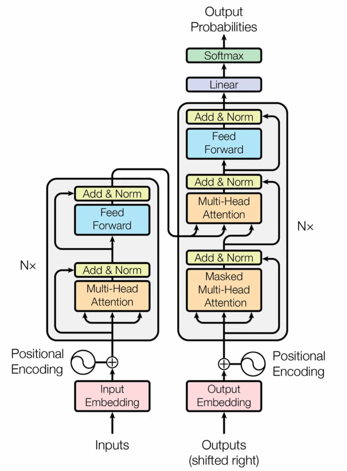

Development and optimization of seq2seq Transformer based chatbotGitHub
Introduction
This project aims to build and train an end-to-end sequence to sequence chatbot model from scratch without using any prebuilt layers, especially the multi-head attention layers. A chatbot is a software application that uses artificial intelligence and natural language processing to interact with human users via text or voice. Chatbots can provide various services, such as answering questions, giving information, generating content, and more. The chatbot is trained on the Cornell Movie-Dialogs Corpus which is a large metadata-rich collection of fictional conversations extracted from raw movie scripts. It contains 220,579 conversational exchanges between 10,292 pairs of movie characters and involves 9,035 characters from 617 movies.
Data preprocessing
Two text files, one containing the conversations as a list of dialog IDs and the other mapping the dialogs to their corresponding dialog ID are used for training the chatbot. Each pair of dialogs are stored in two lists, the first one to be used as queries and the second to be used as responses to the queries. Also, note that each query and its corresponding response are stored in the same index in both lists. The lists indexes were shuffled and split into training and testing sets to avoid the model from learning order dependencies.
A word tokenizer is initialized using tf.keras.preprocessing.Tokenizer and used to tokenize the words in both lists. The start and end tokens were also added to all the dialogs before tokenizing all the dialogs. To speed up the training process, the tf.data.Dataset pipeline was used which enables caching the dataset in memory and prefetching it as required.
Model selection
Many models like RNN can be used as the model for the chatbot but transformers are usually preferred as their neural network architecture uses attention mechanisms to learn the relationships between words and sentences in a given text. Transformers can handle long and complex texts with high accuracy and efficiency, capture long-range dependencies and contextual information better than other models, be easily adapted to different NLP tasks by adding task-specific layers or modules, and leverage large amounts of pre-trained data to learn general language representations that can be fine-tuned for specific domains or tasks. Therefore, transformers satisfy the model requirements for a chatbot by providing a flexible, efficient, and powerful framework for natural language understanding and generation and was chosen as the model for the chatbot.
Multi-head attention module
Multi-head attention is a key component of the transformer model, which is widely used for natural language processing tasks. Multi-head attention allows the model to jointly attend to information from different representation subspaces, as described in the paper "Attention Is All You Need" ¹. In other words, multi-head attention enables the model to learn different aspects of the input text, such as syntax, semantics, context, and relevance.
Multi-head attention works as follows: First, the input query, key, and value vectors are projected into multiple subspaces using linear layers. Then, each subspace is processed by a scaled dot-product attention function, which computes the similarity between the query and the key vectors and uses it to weight the value vectors. Next, the outputs of the attention functions are concatenated and linearly transformed into the expected dimension. Finally, the output of the multi-head attention layer is fed into a residual connection and a layer normalization module.
Multi-head attention has several advantages over single-head attention. First, it increases the model's expressiveness and capacity by allowing it to learn from multiple perspectives. Second, it reduces the computational complexity and memory requirements by splitting the input into smaller chunks. Third, it improves the performance and generalization of the model by reducing the risk of overfitting to a single subspace.
Model development and training
The multi-head attention module despite being available as a predefined layer in TensorFlow was developed from scratch along with the encoder and decoder modules. Two masks, a pad mask to mask the pad tokens, and a look ahead mask, which prevents the model from looking at the future tokens by masking the future tokens. The pad mask is also integrated with the look-ahead mask to mask the pad tokens during cross-attention. The model is currently being trained on Kaggle TPUs.
Training details
The model was trained with two tokenizers - the subword-tokenizer and the word tokenizer using Kaggle TPUs for 250 epochs (I wasn’t able to increase the number of epochs as Kaggle TPUs suspiciously stops training when trained with more epochs). The batch size was set to be 512 times the number of TPU cores (4096).
Evaluation
Both the model after training were evaluated with BLEU metric. The BLEU evaluation metric is a way of measuring how well a chatbot model can generate natural language responses that are similar to human-written ones. It compares the candidate responses from the chatbot model to one or more reference responses that are considered to be good quality. The BLEU score is calculated based on the number of matching n-grams (sequences of words) between the candidate and the reference responses, with higher weights for longer n-grams. The BLEU score ranges from 0 to 1, with 1 being a perfect match and 0 being a complete mismatch.
The below table summarizes the BLEU scores obtained after training the transformer model for 250 epochs.
| Tokenizer | BLEU score (%) |
|---|---|
| Word tokenizer | 2.679 |
| Subword tokenizer | 0.0 |
The trained chatbot models gave the following replies for the questions asked.
Inference Acceleration
To further accelerate inference, an optimized runtime engine was generated from the trained model using NVIDIA TensorRT. TensorRT is a software development kit (SDK) that enables high-performance deep learning inference on NVIDIA GPUs. It works by optimizing and executing trained neural networks from various frameworks, such as TensorFlow, PyTorch, and MXNet. TensorRT can reduce the latency and increase the throughput of inference applications, such as natural language processing, computer vision, and recommender systems.
Implementation details
In this project, the trained Transformer model was saved and then converted to ONNX (Open Neural Network eXchange) format using the third-party library tf2onnx. The inference batch size was fixed and set to 32 on the ONNX file. The ONNX file was then converted to a run time engine for inference using TensorRT. The engine was then leveraged along with the PyCUDA library to accelerate inference on a GPU achieving significant inference speedup.
Results
The below table summarizes the time taken in seconds to perform inference on a batch of 32 sentences.
| Model | Inference speed (seconds) |
|---|---|
| Non-optimized model | 8.26 |
| TensorRT engine | 1.36 |
While the non-optimized model took 8.26 seconds to perform inference on a batch of 32 sentences, the optimized runtime engine was able to perform inference on the same batch within 1.36 seconds, achieving 83.5% inference speedup.